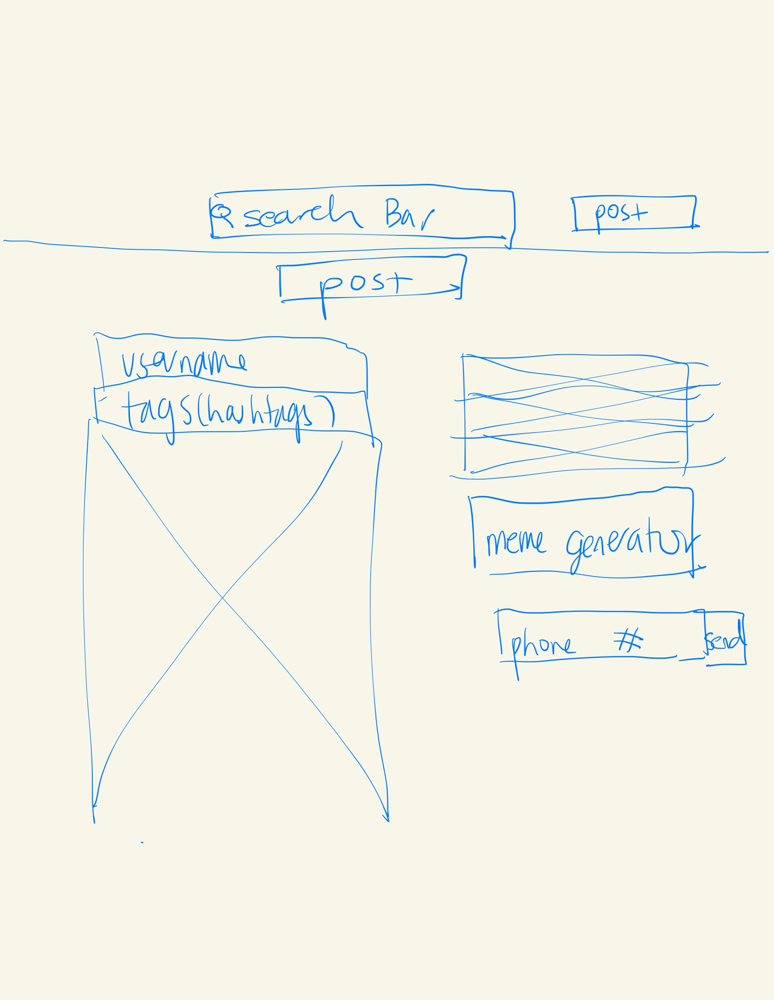
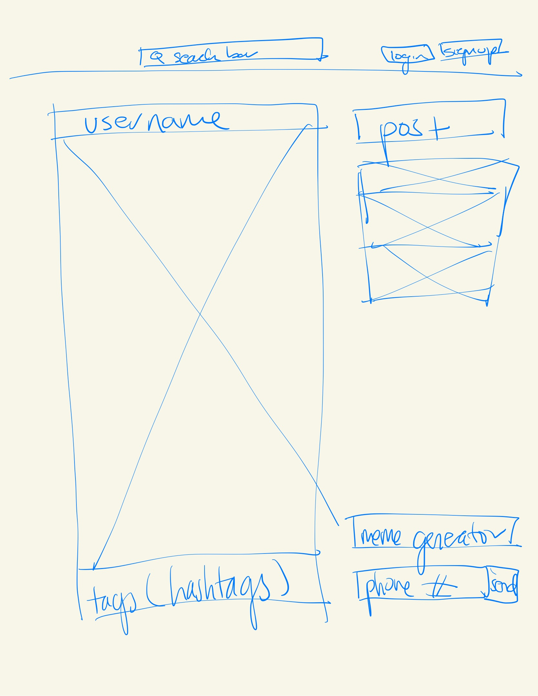

-
Using the favorite website you chose in homework 1, create a wireframe for one page of it using pen/paper, PowerPoint, or any your tool of choice. (use the 'img' tag!) Make sure to let us know what the name of your website is (Use the 'p' tag!)
memes.com
-
Try to improve the website you've chosen, and create a redesigned wireframe of one page for the same website using the principles of visual hierarchy that you learned from the article.

-
What is the goal of the website? Who is it intended for? How does the design accomplish this? Write 2-3 sentences answering these questions. (Use the 'p' tag again!)
I think that the goal of the website is to share memes, especially trending ones, and also encourages others to submit their own memes. This website is mainly for anyone to use, especially as it is available to anyone. I think the website accomplishes this by having an interface similar to that of isntagram where we can scroll through the website to see the recent posts as well as click on buttons that corresponds to posting and looking at trending memes etc.
-
Write 2-3 sentences about what problems your redesign addressed, and how it solved them.
I think the problems from the current design is that there are 2 seperate buttons to post, which helps to emphasize but also looks quite messy as the buttons different colors and sizes. Thus, I moved the post button towards the body area, next to the start of the meme posts. Also, I deleted one of the buttons to make it more clear to the user.
NOTE: Make sure to include the wireframe images in the website and don't just put it in your assets folder!
Your wireframes should look something like this: